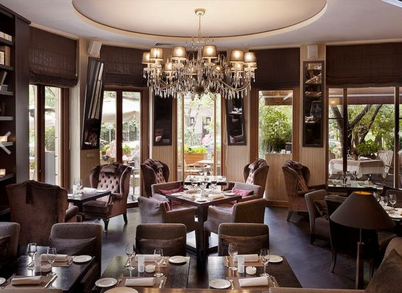

Istoric
Primele cafenele au început a fi deschise în jurul anului 1550, în Istanbul, apoi numărul lor a crescut într-un ritm destul de rapid. Acestea erau puncte de întâlnire ale turcilor, locuri în care bărbații se întâlneau pentru a discuta și a ieși din cotidian. Sultanii au încercat, în unele rânduri, să desființeze cafenele, dar acest lucru prejudicia strângerea taxelor obținute din comerțul cu cafea. În scurt timp, cafenelele au devenit un lucru comun în întreaga Turcie, dar și în teritoriile cucerite de aceștia. În Europa Apuseană, aceste localuri turcești au intrat prin filiera austro-ungară, imperiu care era un mediator între Sfântul Imperiu Roman și Imperiul Otoman. Una dintre primele cafenele turcești din Europa Apuseană a fost La Bottega del Caffé care a ființat în Veneția după anul 1624.
În multe țări europene, precum Olanda, Austria, Danemarca, Germania, Norvegia, Suedia, Portugalia etc., termenul café se referă la servirea cafelei, de obicei însoțită de o felie de prăjitură/plăcintă/tartă. Majoritatea cafenelelor oferă și meniuri ușoare, precum sandvișurile. Cafenelele europene au, de obicei, atât mese afară, pe trotuar, cât și înăuntru. Unele cafenele servesc, pe lângă cafea, și băuturi alcoolice, în special în țările din Europa de Sud. În Belgia și Olanda o cafenea este echivalentul unui bar și vinde și băuturi alcoolice. În Franța majoritatea cafenelelor sunt restaurante ziua și baruri noaptea. De obicei nu au produse de panificație, exceptând în cursul dimineților, când se poate servi și un croissant alături de cafea.